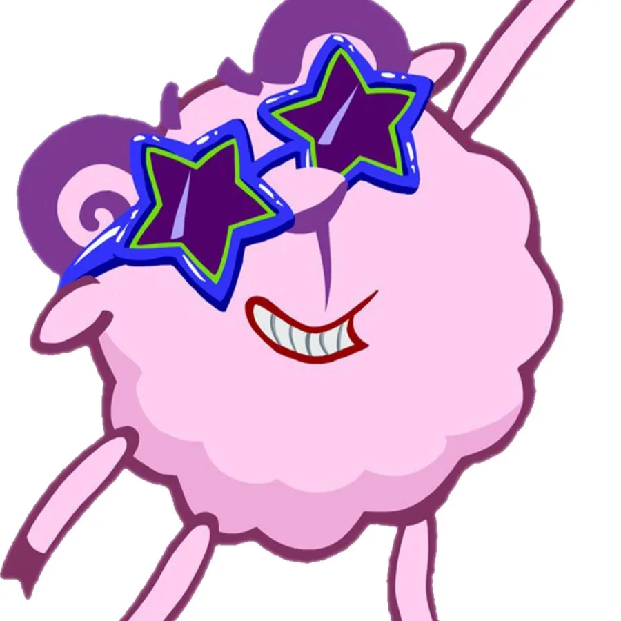
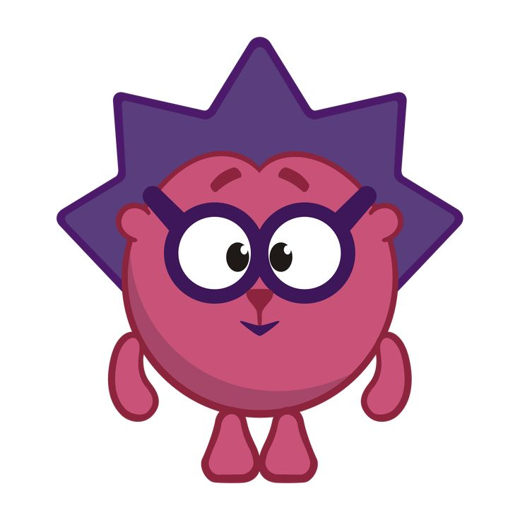
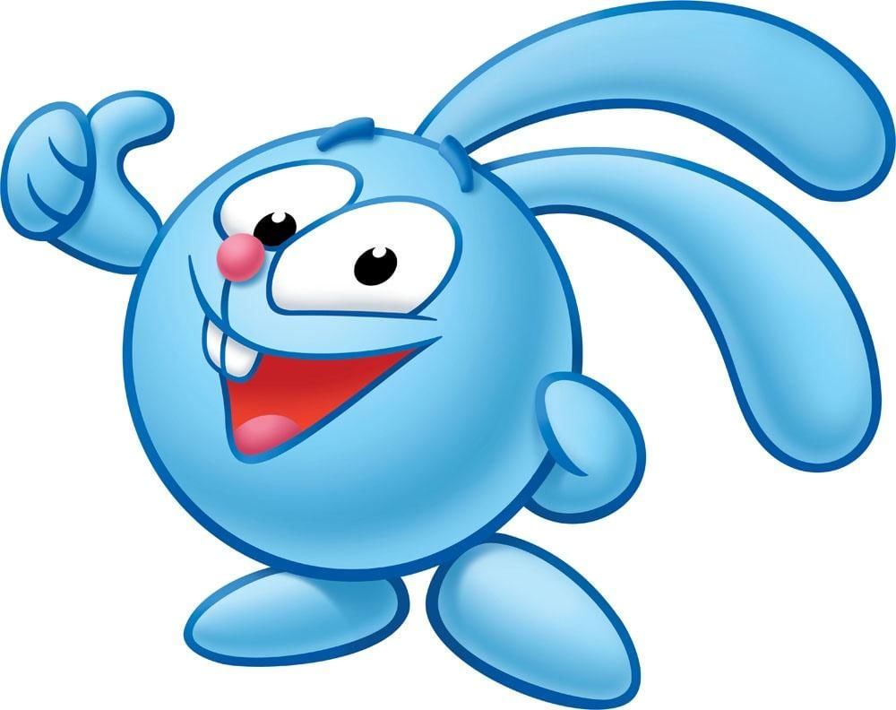
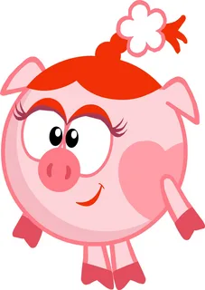
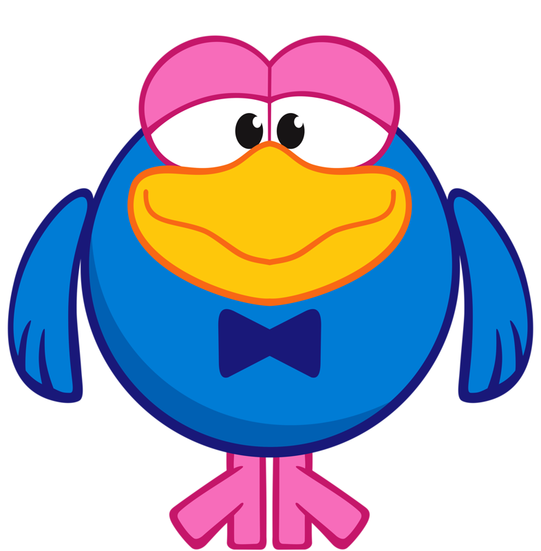
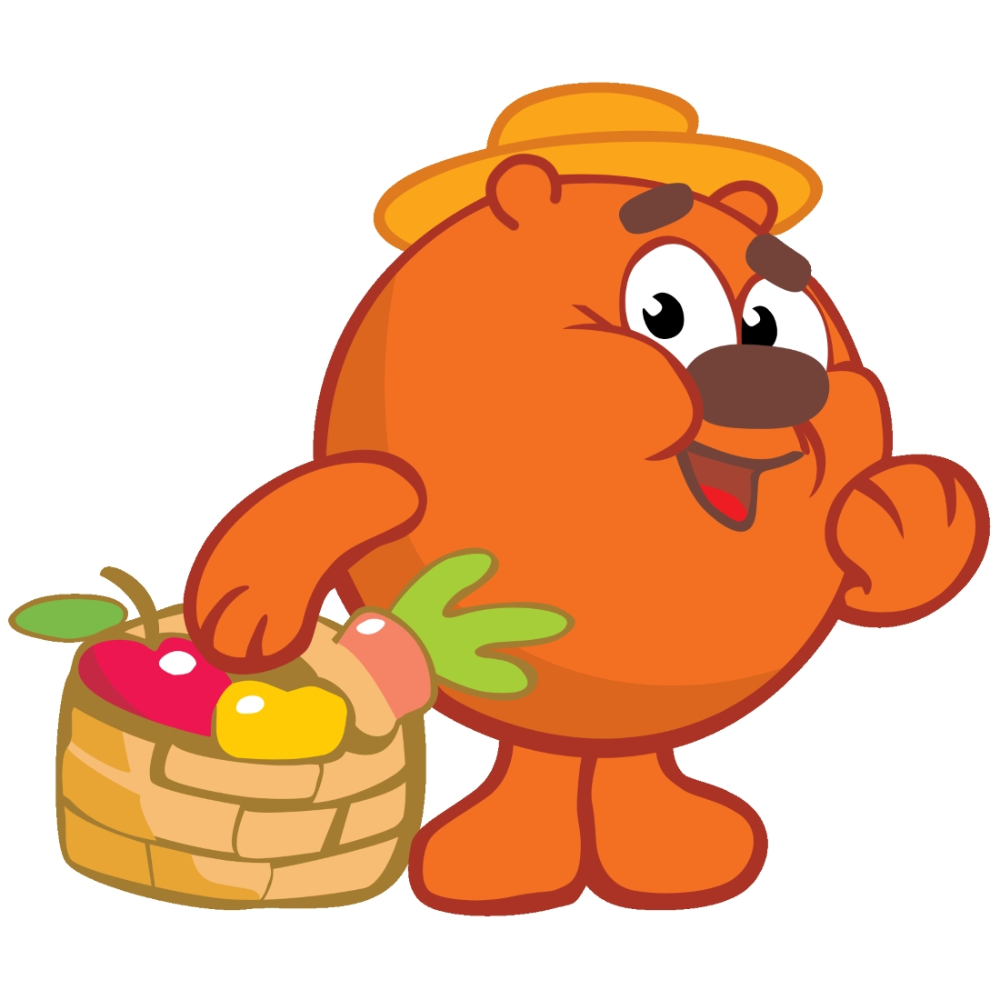
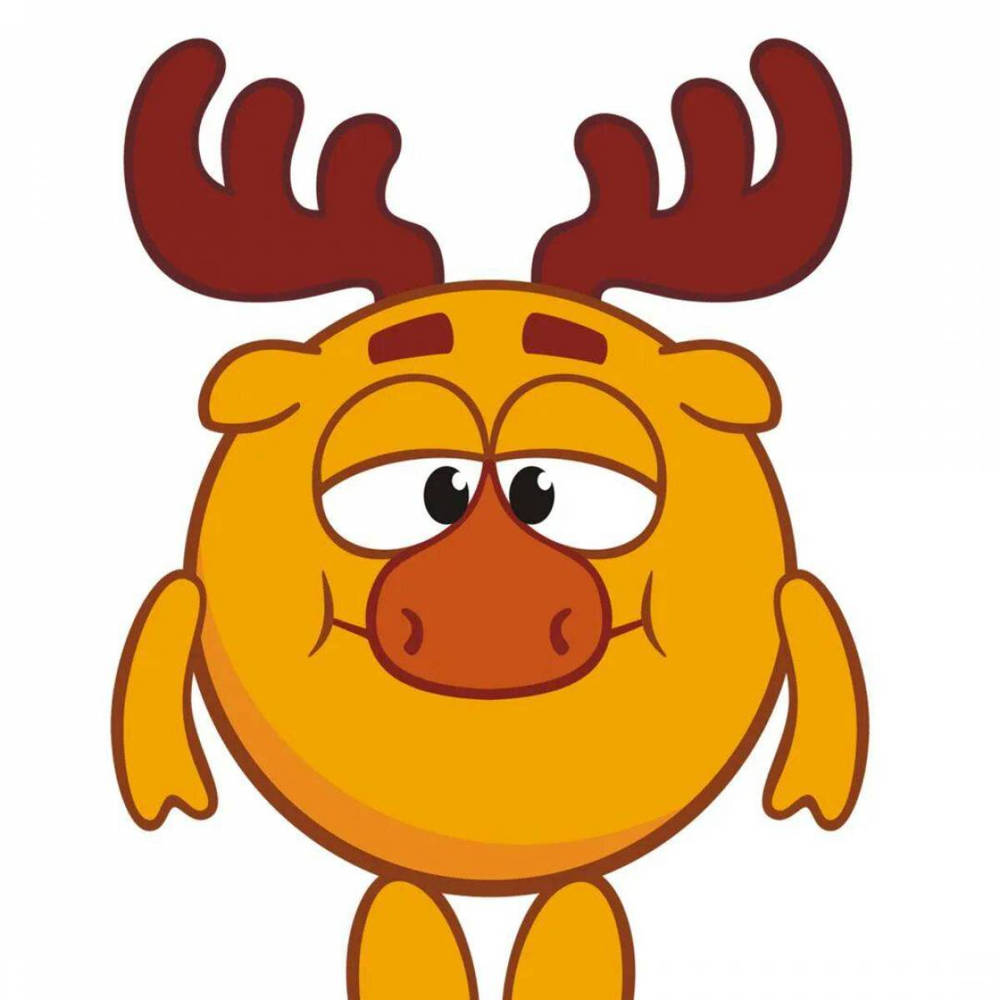
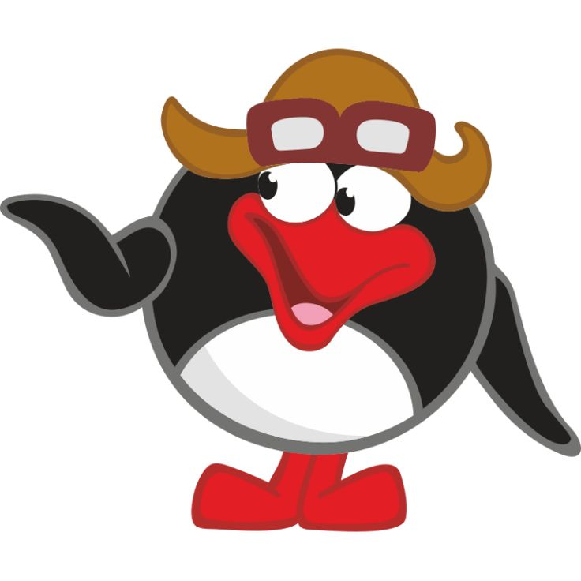
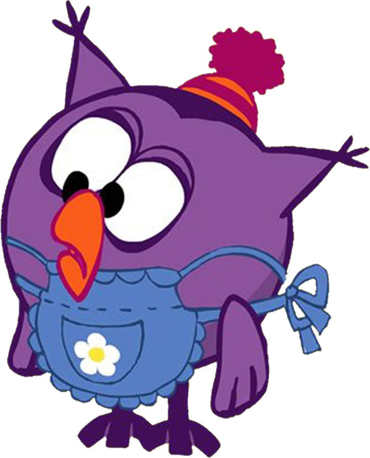

Смешарики - это бренд, изменивший современную российскую анимацию. Сериал для всей семьи, на котором выросло несколько поколений детей. Наполненный добрым юмором, интуитивно понятным детям и раскрывающимся тонкими гранями для взрослых. Не похожие ни на кого, не имеющие аналогов ни в российской, ни в мировой анимации, образы Смешариков остаются невероятно популярными в России и во всем мире на протяжении уже более 20 лет.
Всего в мультфильме 9 основных героев:

Бараш родился 29 апреля — это барашек, поэт-лирик, он вздыхает и пишет стихи о печали, меланхолик. Его тонкую натуру легко обидеть, поэтому Бараш требует много внимания от окружающих, которое он привлекает своей несчастностью и непонятливостью.
Бараш — легко ранимый, в трудной ситуации он даже может заплакать. Но он не желает, да и не способен причинить кому-нибудь зла и только всячески пытается выразить свою симпатию к Нюше, хотя и не совсем удачно. Бараш относится к тем, кто не хочет понять, что «профессиональное» написание стихов — логическая работа, требующая понимания структуры текста, владения обширной теоретической базой, а также некоторого опыта ее практического применения.

Родился 14 февраля — серьёзный и совестливый друг Кроша, флегматик. В отличие от своего приятеля, Ёжик очень хорошо воспитан, рассудителен, и потому не сопротивляется активности и напористости друга.
Ёжик медлителен и немного застенчив, стеснителен, чрезмерно чувствителен к окружающим. Имеет коллекции грибов, кактусов и фантиков. Любит порядок. Имеет талант мирить тех, кто поссорился.

Родился 29 декабря — Крош - это весёлый и энергичный кролик-непоседа, по темпераменту холерик. Он суетлив и часто перебивает собеседника, часто моргает сначала правым глазом, потом левым, любит приключения вроде похода в горы или подводного плавания и всё время втягивает Ёжика в свои авантюры.
Крош — неунывающий оптимист и экспериментатор, он на всё имеет своё, особое мнение.

Родилась 13 июля — девочка-хрюшка (свиНюша), которая мечтает стать принцессой, по характеру она сангвиник. Нюша считает себя неотразимой красавицей, следит за своей внешностью и модничает. Она очень любопытна, по-женски манипулирует окружающими и старается быть центром всеобщего внимания.

Родился 23 марта согласно календарику с очень бурным прошлым: он много путешествовал, выступал в цирке и пел, но сейчас вышел на пенсию.
Карыч очень любит быть в центре внимания, много болтает и хвастается, и всё это делает чрезвычайно заразительно. К нему часто обращаются за советом, он очень эрудирован, но рассеян. Всё, что случается со Смешариками, он уже пережил и сделал из этого выводы.

Это добрый и хозяйственный медведь-огородник, который выращивает продукты для всех Смешариков (оттого что много копает - и зовут его Копатыч). Имеет большую физическую силу и твёрдый характер, в трудных ситуациях берёт всё в свои руки. На зиму засыпает, но не всегда — в сериях «Куда уходит старый год?» и «Новогодняя сказка» он отмечал Новый год вместе со всеми, а в серии «Эффект бабушки» он отмечал свой день рождения. Лучший танцор диско.

Родился 25 мая — это рассеянный и забывчивый лось-учёный, интересуется астрономией и другими науками, даже получил Нобелевскую премию. Из-за чрезмерной увлечённости Лосяша в его доме всегда совершенный беспорядок, да и внешний вид его самого довольно неряшливый. Он очень серьёзен, любит читать книжки и иногда пытается применять свои теории на практике, то есть «ходить в народ». При всей его отрешённости он любит поесть.

Родился 9 августа — это пингвин-изобретатель, немец, говорящий с сильным акцентом (иногда даже употребляет немецкие слова, и коверкает русские), живёт в холодильнике и вообще выделяется своей некоммуникабельностью среди других Смешариков.
Несмотря на доброту, готовность помочь другу и решительность, Пин рассеян и гораздо лучше разбирается в «железе», чем в жизни, поэтому порой его изобретения не очень удобны или вообще никому не нужны, как например «вечный двигатель», который «потребляет дрова, превращает их в энергию и, может снова потреблять дрова!» и «ничего не даёт, только берёт!».

Родилась 15 сентября — сова-врач, раньше была преподавателем физкультуры, обожает спорт, любит свежий воздух. Очень хозяйственна, весьма прагматична, обладает большим жизненным опытом, но при этом довольно сентиментальна. Несмотря на своё имя, по режиму дня является жаворонком. Живёт в дупле дерева на северо-западе. У неё есть балкон, лестница и крутая горка, для лыж — самого любимого спортивного увлечения.
Посмотреть мультфильм:
| Герой | Количество серий |
| Крош | 174 |
| Ёжик | 175 |
| Бараш | 126 |
| Нюша | 133 |
| Лосяш | 127 |
| Копатыч | 112 |
| Кар-Карыч | 108 |
| Совунья | 111 |
| Пин | 79 |
Посмотреть мультфильм: Смешарики
Наверх